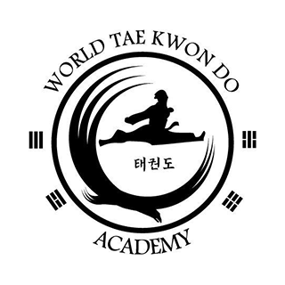

| Home | Portfolio | Qualifications | Service | AI-Page |
|---|
World Taekwondo Academy - AssistantAugust 2015 - February 2019As a teenager I taught younger students at my local taekwondo academy. I helped masters and instructors teach classes, aided during belt tests and other school events, and managed children ages 5-10. This experience helped me develop patience, resposibility, leadership, and teamworking skills with my fellow assistants. Although I no longer work as an Assistant Instructor at my current school, I still help out during belt tests, black belt tests, and classes whenever I am back home. |
Castle - Prospective MemberAugust 2024 - PresentAlthough I haven't officially become a member of this organization yet, I am in the process of applying. I haven't been as active in volunteering my time to service others as previous years, but I hope to meet like minded people, develop my leadership and teamworking skills, and serve others in need. |
|---|